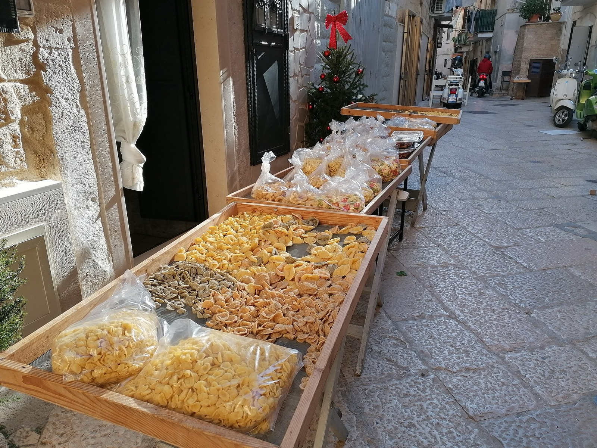
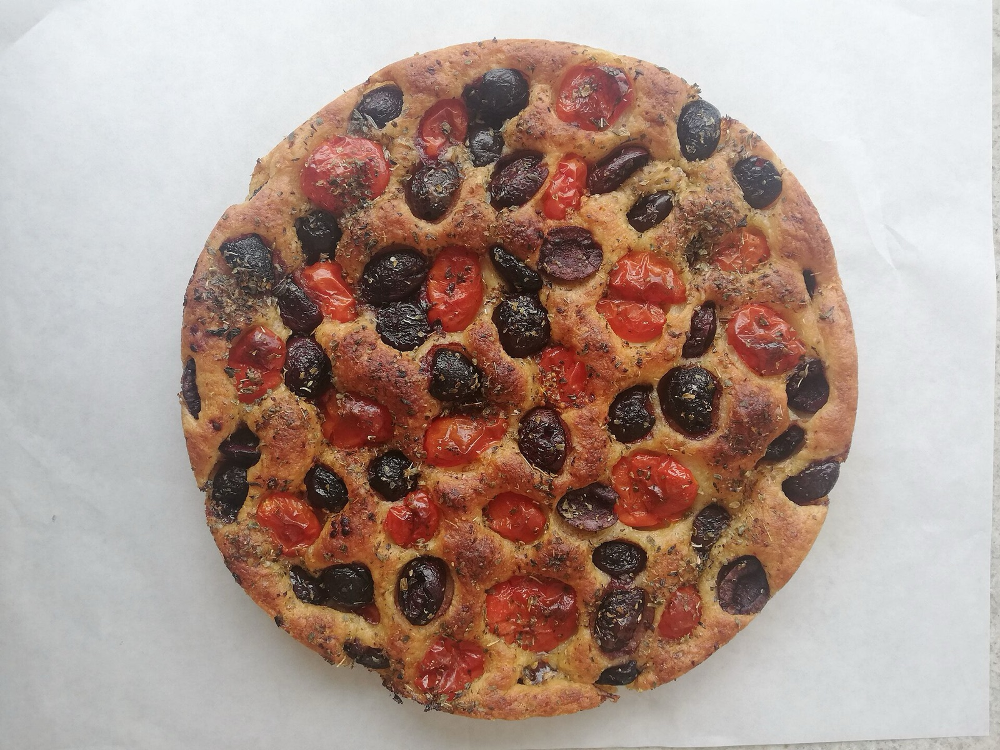
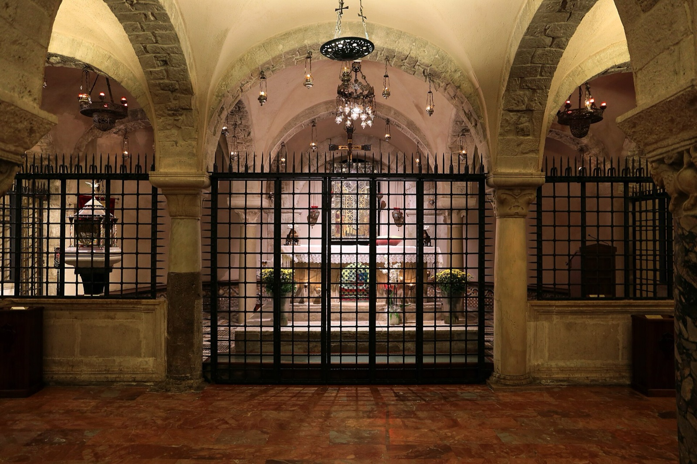
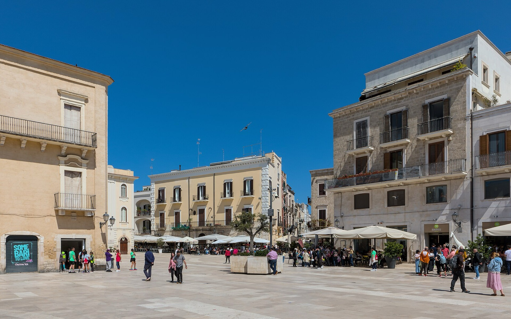
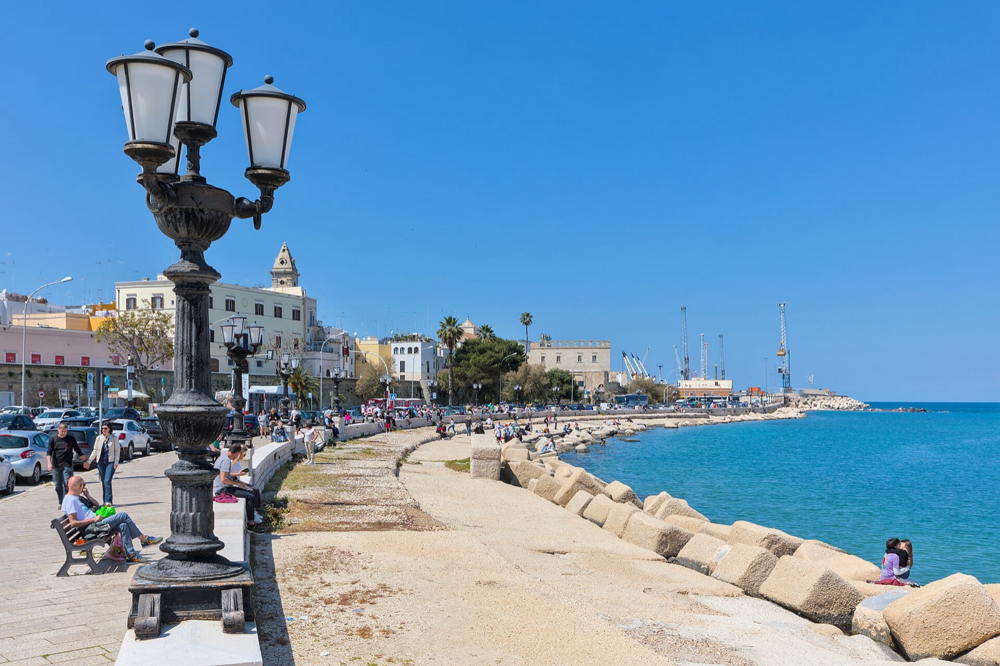
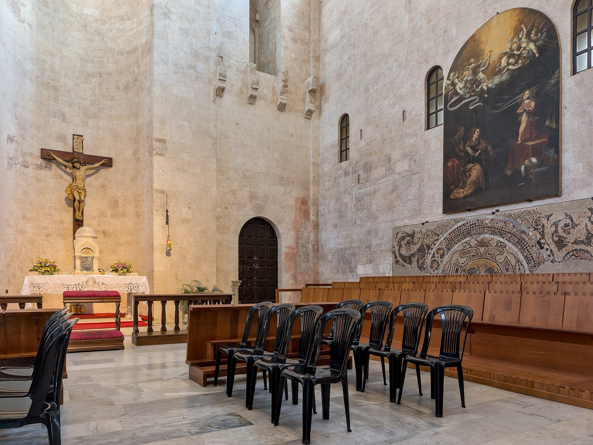

Источники
Фотографии
Все фотографии взяты из Wikimedia Commons под свободными лицензиями Creative Commons и отредактированы (масштабирование и сжатие) для сайта. Спасибо авторам за их работы.
-
 Полиньяно-а-Маре · панорама Фото: acediscovery · CC BY 4.0 Wikimedia Commons →
Полиньяно-а-Маре · панорама Фото: acediscovery · CC BY 4.0 Wikimedia Commons → -
 Йога на восходе Фото: Dave Contreras basixfilms · CC0 Wikimedia Commons →
Йога на восходе Фото: Dave Contreras basixfilms · CC0 Wikimedia Commons → -
 Цветок лотоса Фото: Hong Zhang ( jennyzhh2008 ) · CC0 Wikimedia Commons →
Цветок лотоса Фото: Hong Zhang ( jennyzhh2008 ) · CC0 Wikimedia Commons → -

Орекьетте Фото: Maddy16869 · CC BY-SA 4.0 Wikimedia Commons → -

Фокачча барезе Фото: Simona.IT · CC BY-SA 4.0 Wikimedia Commons → -
 Бари · базилика Сан-Никола Фото: Phyrexian · CC BY-SA 4.0 Wikimedia Commons →
Бари · базилика Сан-Никола Фото: Phyrexian · CC BY-SA 4.0 Wikimedia Commons → -

Бари · крипта с мощами Фото: Sailko · CC BY-SA 4.0 Wikimedia Commons → -
 Бари · старый город и замок Фото: Martin Falbisoner · CC BY-SA 4.0 Wikimedia Commons →
Бари · старый город и замок Фото: Martin Falbisoner · CC BY-SA 4.0 Wikimedia Commons → -
 Бари · улица орекьетте Фото: GiovanniPen · CC BY-SA 4.0 Wikimedia Commons →
Бари · улица орекьетте Фото: GiovanniPen · CC BY-SA 4.0 Wikimedia Commons → -

Бари · Пьяцца Меркантиле Фото: Benjamin Smith · CC BY-SA 4.0 Wikimedia Commons → -

Бари · набережная Фото: Benjamin Smith · CC BY-SA 4.0 Wikimedia Commons → -

Бари · собор Сан-Сабино Фото: Benjamin Smith · CC BY-SA 4.0 Wikimedia Commons → -
 Полиньяно · Лама-Монакиле Фото: Pipito93 · CC BY-SA 4.0 Wikimedia Commons →
Полиньяно · Лама-Монакиле Фото: Pipito93 · CC BY-SA 4.0 Wikimedia Commons → -
 Полиньяно · морской грот Фото: Isabella.Mileti · CC BY-SA 4.0 Wikimedia Commons →
Полиньяно · морской грот Фото: Isabella.Mileti · CC BY-SA 4.0 Wikimedia Commons → -
 Полиньяно · старый город Фото: Driante70 · CC BY-SA 4.0 Wikimedia Commons →
Полиньяно · старый город Фото: Driante70 · CC BY-SA 4.0 Wikimedia Commons → -
 Альберобелло · крыши трулли Фото: Benjamin Smith · CC BY-SA 4.0 Wikimedia Commons →
Альберобелло · крыши трулли Фото: Benjamin Smith · CC BY-SA 4.0 Wikimedia Commons → -
 Альберобелло · панорама Фото: Maurizio Moro5153 · CC BY-SA 4.0 Wikimedia Commons →
Альберобелло · панорама Фото: Maurizio Moro5153 · CC BY-SA 4.0 Wikimedia Commons → -
 Альберобелло · улочка Фото: Benjamin Smith · CC BY-SA 4.0 Wikimedia Commons →
Альберобелло · улочка Фото: Benjamin Smith · CC BY-SA 4.0 Wikimedia Commons → -
 Альберобелло · интерьер трулло Фото: Horcrux92 · CC BY-SA 4.0 Wikimedia Commons →
Альберобелло · интерьер трулло Фото: Horcrux92 · CC BY-SA 4.0 Wikimedia Commons → -
 Матера · панорама Сасси Фото: Jules Verne Times Two · CC BY-SA 4.0 Wikimedia Commons →
Матера · панорама Сасси Фото: Jules Verne Times Two · CC BY-SA 4.0 Wikimedia Commons → -
 Матера · закат Фото: Cristoforo64 · CC BY-SA 4.0 Wikimedia Commons →
Матера · закат Фото: Cristoforo64 · CC BY-SA 4.0 Wikimedia Commons → -
 Матера · голубой час Фото: Benjamin Smith · CC BY-SA 4.0 Wikimedia Commons →
Матера · голубой час Фото: Benjamin Smith · CC BY-SA 4.0 Wikimedia Commons → -
 Матера · пещерная церковь Фото: Diego Baglieri · CC BY-SA 4.0 Wikimedia Commons →
Матера · пещерная церковь Фото: Diego Baglieri · CC BY-SA 4.0 Wikimedia Commons → -
 Матера · Сан-Пьетро-Кавеозо Фото: Benjamin Smith · CC BY-SA 4.0 Wikimedia Commons →
Матера · Сан-Пьетро-Кавеозо Фото: Benjamin Smith · CC BY-SA 4.0 Wikimedia Commons →